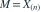
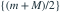
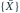

按闭区间密度版本写似然，独立同分布样本来自 ， 已知。令 ， 的最大似然估计集合是？
的最大似然估计集合是？

，已知 。 的最大似然估计集合是？- A
- B

- C
- D

我已思考，展开答案与解析
正确答案：A
- 所有观测进入支持集的条件是 且 ，即 。
- 在该区间内似然恒为 ，因此每个点都是一个 MLE。
易错提醒似然平台意味着 MLE 不唯一；不能只给一个候选点。
JYSG · 432精选 · 册内北京师范大学432·2025年·3(1)；PDF第63页（印刷页61）
原大题拆解